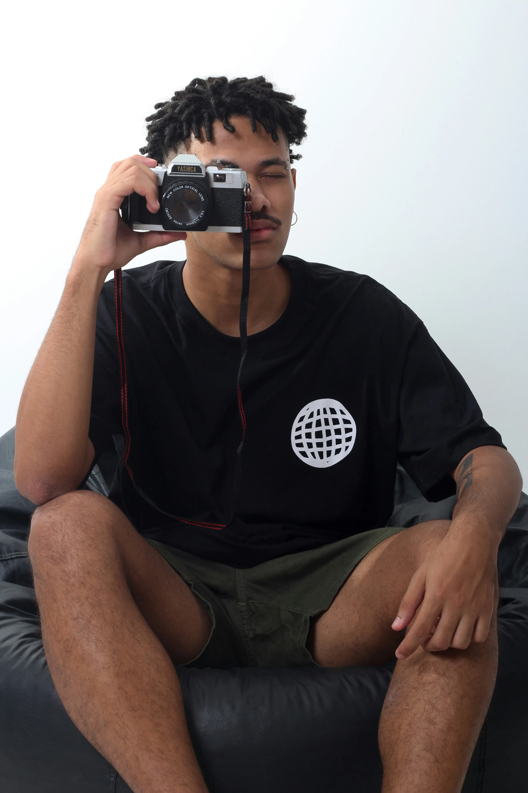

Hello, I'm Jack
Professional photographer with 5+ years specializing in portrait and landscape photography. My work has been featured in National Geographic and TIME.
My Style
Cinematic natural lighting • Authentic emotions • 4K resolution • Minimal post-processing for raw authenticity
My Equipment
- Main Camera: Sony α7 IV (Full-frame 33MP)
- Lenses:
- Sony FE 24-70mm f/2.8 GM II
- Sony FE 70-200mm f/2.8 GM OSS II
- Lighting: Godox AD200Pro with MagMod system